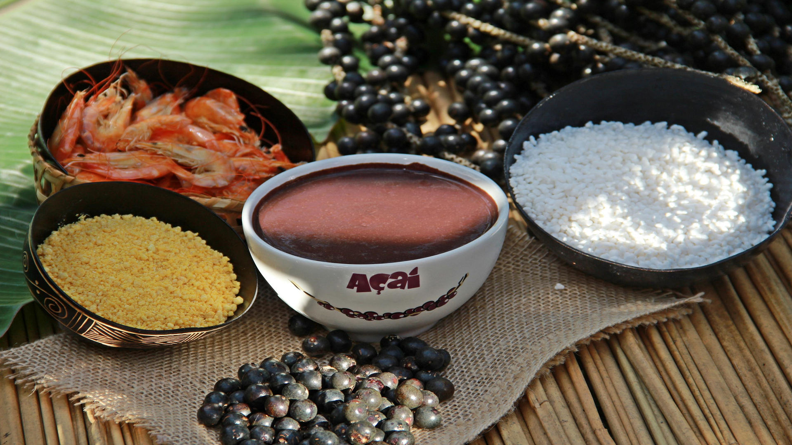
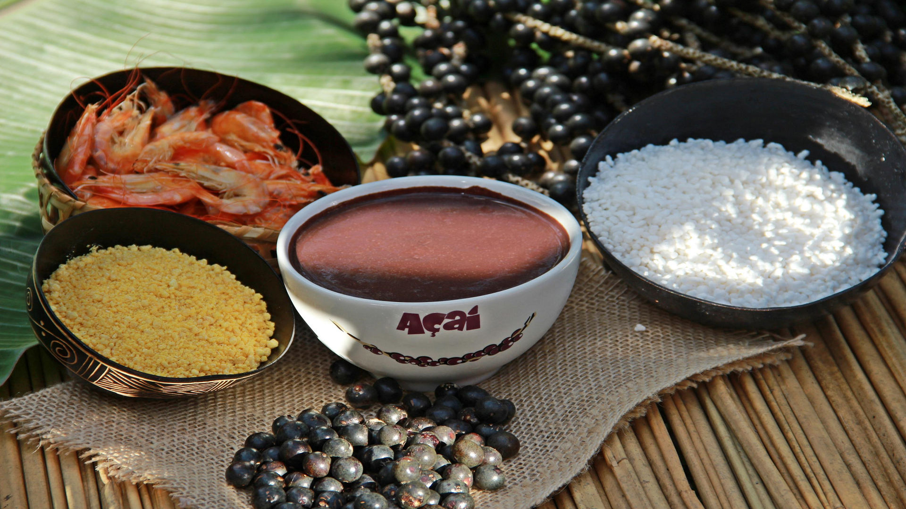

O Açaizeiro
Uma especie de palmeira, tipica da região Norte, porém também é encontrada em outras regiôes, essa arvoré de nome açaizeiro traz um fruto pequeno de cor "estilosa"; ao ser processado fornece um suco, onde aqui no Pará chamamos de "vinho"; com qualidades impares, cor distinta, aroma específico, sabor diferenciado.
O caroço de Açaí
Fruto pequeno, porém de grande qualidade nutricional, com uma rica história (Lenda do Açaí), este fruto que pode ser consumido roendo seu caroço ou através de processos de batimento em máquinas ou amassado com as mãos, como se fazia antigamente, e peneirado, misturado em água formando um líquido espesso.
O Armazenamento
Ao ser coletado das árvores, o açaí é retirado de seus finos galhos, mecanicamente ou manualmente; aqui no Pará essa técnica manual damos o nome de debulhar, ápos essa separação, o açaí é armazenado em cestos, feitos de talas de miriti ou ensacados. Esse processo se dá o nome de rasa, que também é uma unidade de medida para se realizar a venda do fruto nas feiras da região.
O Processamento
O açaí, já de posse de seus novos comerciantes é processado por máquinas, em uma mistura de 2 baldes com caroços de açaí por aproximadamente 1l de água, inicialmente. A máquina realiza a separação dos caroços da parter alimentar do açaí, e ao se misturar com a água e ser peneirado é formado o "vinho" de açaí ou simplesmente açaí, um líquido grosso ou fino dependendo da quantidade de água colocada para realizar o batimento e mistura.
O Açaí
Ápos todo o trabalho realizado, chega a mesa do consumido o famoso Açaí, para ser consumido das mais variadas formas. Uma dessas formas e mais antiga, é como nós, da região Norte, uma parcela de nortista, indo funilando, Paraensses, Belenensse, costumam se deliciar, colocar o açaí em uma vasilha (tijela, cuia, prato, ...), misturar ou não com açúcar e farinha de mandioca ou farinha de tapioca, tendo como acompanhamento outros alimentos, proteina, peixe frito (pirarucu), jabá (charque), carne de sol, entre outro que se desejarem de acompanhamento, depois para manter uma tradição de avós, colocar um pouco de água na vasilha e tomar, para não dá azia.